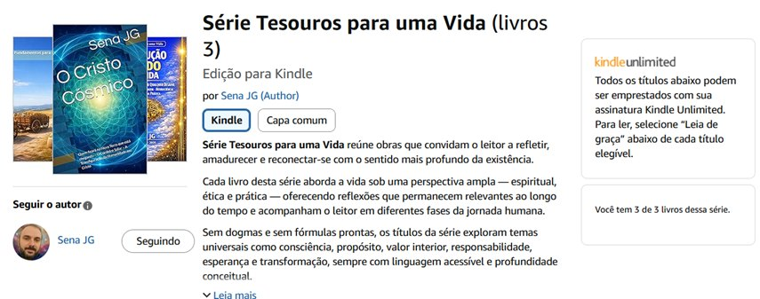

Tesouros para uma Vida
Livro: A Solução de Tudo na Vida
Estratégias para Vencer Qualquer Desafio,
Ansiedade e Autossabotagem — Neurociência
Aplicada à Vida Prática
Autor: Sena JG
Livro da Série: Tesouros para uma Vida
1ª edição 2026
Leia agora: amazon.com.br/dp/B0GNPMHJQN
A Solução de Tudo na Vida: Estratégias para Vencer Qualquer Desafio, Ansiedade e Autossabotagem — Neurociência Aplicada à Vida Prática (Série Tesouros para uma Vida) e-book Kindle
por Sena JG (Autor) formato: e-book Kindle
A vida real exige mais do que motivação: exige clareza, estabilidade emocional e ação consistente.
A Solução de Tudo na Vida reúne estratégias práticas para enfrentar desafios, ansiedade e autossabotagem com neurociência aplicada e decisões simples que cabem no cotidiano.
Você vai aprender como retomar o eixo quando a mente acelera, como voltar a agir mesmo sem vontade e como construir um ritmo de melhora que se sustenta.
Este livro é direto, objetivo e feito para começar — inclusive pela amostra.
Neste livro, você encontra:
- Estratégias curtas para dias difíceis;
- Caminhos para destravar e recuperar foco;
- Técnicas para reduzir autossabotagem no cotidiano;
- Princípios práticos para consistência emocional;
Comece pelas primeiras 20 páginas.
Ao final, capítulo apêndice bônus com técnicas de descompressão bio-psicoemocional, meditação, respiração dirigida e mentalização (Mindfulness).
Um livro realmente muito bom de ser lido e extremamente útil. Experimente começar!
Soluções práticas, testadas e muito úteis.
Embasado em experiências de vida e em Neurociência moderna.
A restauração pessoal e o êxito vêm de dentro para fora. Mas dependem de movimentos. Dependem, não raro, de estímulos externos, e decisão de se sentir bem.
O significado age como estrutura de compressão da experiência.
Nesse livro, veremos isso tudo.
Esse livro é especialmente dedicado a vocês, aos(as) leitores(as)!
Boa leitura e bons resultados práticos a todos e todas!
Análise da Obra: "A Solução de Tudo na Vida"
A obra "A Solução de Tudo na Vida", de Sena JG, é um livro de autoajuda e desenvolvimento pessoal que se propõe a ser um guia prático e profundo para a construção de uma vida com mais significado, estabilidade e integridade. A análise a seguir é dividida em tópicos para maior clareza.
1. Estrutura e Estilo
- Organização: O livro é muito bem estruturado. Divide-se em 11 capítulos, cada um com 2 a 3 partes, culminando em um epílogo e um apêndice prático com 12 exercícios. A presença de um sumário detalhado no final (páginas 210-213) reforça a organização e permite ao leitor navegar pelos temas de interesse.
- Estilo de Escrita: A prosa é sóbria, reflexiva e densa em conceitos, mas mantém um tom acessível e quase poético. O autor utiliza metáforas poderosas e recorrentes ("tesouro", "celeiro", "eixo", "assinatura", "espelho", "navio de Teseu") para ancorar ideias abstratas, criando uma linguagem própria e coesa ao longo do texto. O estilo é mais filosófico do que estritamente científico, embora faça referências pontuais à neurociência e à psicologia para fundamentar seus argumentos.
- Tom: O tom é de um mentor sábio e paciente, que não oferece fórmulas mágicas, mas sim um caminho de reflexão e prática. É um tom que acolhe a dificuldade da existência humana ("o leitor cansado") e oferece não uma fuga, mas uma "postura ontológica" para enfrentá-la. Há uma busca constante por equilíbrio: entre a firmeza e a flexibilidade, a ação e a contemplação, o individual e o relacional.
2. Temas Centrais e Tese Principal
A obra constrói uma tese robusta em torno da ideia de um "tesouro que ninguém pode roubar". A seguir, os principais conceitos que a sustentam:
- A Continuidade do Ser: O livro inicia com a pergunta fundamental: "o que em nós é realmente nosso?" e "o que permanece quando tudo muda?". A resposta não está nas posses externas, mas numa "dimensão do ser humano que não depende diretamente das circunstâncias". Essa dimensão é o "tesouro" a ser cultivado.
- Percepção e Interpretação como Realidade Vivida: Um dos capítulos mais fortes (Capítulo 2) argumenta que não vivemos no mundo objetivo, mas na "realidade vivida", que é fruto da nossa interpretação. A mente não é uma câmera, mas um modelo funcional do mundo. Portanto, mudar a própria percepção e os "filtros" interpretativos é a base para qualquer transformação duradoura.
- A Necessidade de Significado: O autor coloca o significado como uma necessidade biológica, tão vital quanto o ar. Ele é o "eixo organizador da experiência", que dá direção, permite perseverar através da dor e evita que a vida se torne uma sucessão de eventos vazios. O amadurecimento do significado leva a uma identidade menos defensiva e a uma maior abertura para o mundo.
- A Travessia do Entendimento para a Ação: Um ponto crucial e realista do livro é a distinção entre compreender algo e vivê-lo. A mudança não é instantânea; exige uma "travessia" feita de repetição e "hábito consciente". O objetivo não é a perfeição, mas a "expansão progressiva do espaço de escolha", até que a nova prática se torne "natureza".
- O Outro como Espelho Ativo: O livro rejeita a ideia do outro como mero obstáculo. Em vez disso, o apresenta como um "revelador das partes de mim que ainda reagem automaticamente". As relações são oportunidades de autoconhecimento e treino para as virtudes. O diálogo profundo cria uma "região intermediária de significado" que transforma ambos os envolvidos.
- A Natureza do Sofrimento: O autor oferece uma distinção madura sobre a dor: há sofrimentos que pedem ação (corrigíveis) e sofrimentos que pedem assimilação (estruturais, inerentes à vida). Confundir os dois gera angústia. A sabedoria está em discernir entre eles e responder adequadamente.
- A Alegria como Disciplina e a Coragem Silenciosa: Nos capítulos finais, o autor propõe que a alegria não é um prêmio do acaso, mas uma "disciplina" que se constrói com "microdecisões" e um "sim interior" à dignidade. Da mesma forma, a coragem não é a ausência de medo, mas a capacidade de ouvi-lo como um "mensageiro" e agir de acordo com os próprios valores, um "passo de cada vez". Essa coragem, aliada à paz interior, gera uma "presença generosa" que impacta o mundo.
- Virtude como Patrimônio e Legado: O "tesouro" final é a soma de virtudes incorporadas (honestidade, mansidão, coragem, fidelidade ao bem). Esse patrimônio interno é "o que ninguém toma". Ele não serve apenas para proteger o indivíduo, mas para "transbordar" e se tornar um legado. O legado não é um monumento, mas o "rastro moral" deixado nos outros, a capacidade de "despertar" o bem ao redor e de "não perpetuar a dor".
3. Pontos Fortes
- 1Profundidade Filosófica com Aplicação Prática: O livro equilibra bem a reflexão existencial com ferramentas concretas. As ideias são densas, mas os exercícios do apêndice e os conceitos de "microdecisões" ancoram a filosofia no cotidiano.
- 2Coerência Interna e Narrativa: A metáfora central do "tesouro" e os conceitos de "celeiro", "eixo" e "assinatura" são desenvolvidos de forma consistente, criando uma poderosa narrativa de transformação que une todos os capítulos.
- 3Tom Realista e Não Ingênuo: O autor não promete felicidade fácil ou a eliminação da dor. Pelo contrário, ele valida o cansaço, o sofrimento e a dificuldade da travessia, oferecendo uma "esperança adulta" que não nega a realidade.
- 4Foco no Relacional: Ao dedicar um capítulo inteiro ao papel do outro como "espelho ativo", o livro evita o individualismo excessivo comum em obras de autoajuda, situando o desenvolvimento pessoal dentro do contexto humano.
- 5Estrutura e Recursos: A organização em capítulos e partes, juntamente com o apêndice de exercícios práticos, torna a obra utilizável tanto para leitura linear quanto para consulta em momentos de necessidade.
4. Pontos a Considerar / Potenciais Desafios
- 1Densidade do Texto: A prosa reflexiva e rica em conceitos pode ser desafiadora para leitores que buscam um guia mais direto e com menos filosofia. O ritmo é contemplativo, exigindo atenção e disposição para a reflexão.
- 2Referências Científicas: A ciência é usada mais como uma validação de fundo do que como pilar central da argumentação.
- 3Título Ambição vs. Conteúdo: Conteúdo real do livro, que é sóbrio, complexo e exige trabalho interno. Leitores atraídos pelo título podem se surpreender (positivamente) com a seriedade da obra.
- 4Contexto do Autor: Escreveu várias obras como “O Cristo Cósmico”, “O Celeiro Desa Vida”, “Como A Realidade Funciona?”, e todos em língua inglesa também. Também escreveu livros como “Money, Now Yes”, dentre outros.
5. Público-Alvo
Este livro é ideal para leitores que:
- Já passaram pela fase de buscar motivação superficial e agora procuram um caminho mais profundo e sustentável de desenvolvimento pessoal.
- Enfrentam desafios existenciais como ansiedade, falta de propósito e autossabotagem.
- Apreciam uma linguagem reflexiva e poética aliada a conceitos práticos.
- Estão dispostos a um processo de autoconhecimento que exige paciência, constância e trabalho interno, sem promessas de resultados rápidos.
- Têm interesse em temas que unem psicologia, filosofia e espiritualidade de forma madura e integrada.
6. Conclusão
"A Solução de Tudo na Vida" é uma obra notável dentro do gênero de desenvolvimento pessoal. Em vez de oferecer soluções rápidas, Sena JG convida o leitor para uma jornada de construção de um "tesouro" interior: a capacidade de permanecer íntegro, lúcido e bom em meio às inevitáveis mudanças e sofrimentos da vida. Sua força está na profundidade de suas reflexões, na coerência de sua narrativa e na ponte que estabelece entre a filosofia existencial e a prática cotidiana. É um livro para ser lido com calma, digerido e, principalmente, "habitado". Para o leitor que busca não apenas ferramentas, mas uma nova forma de ser no mundo, esta obra pode, de fato, oferecer um caminho valioso e transformador.
Este livro faz parte da Série:
Série Tesouros para uma Vida (livros 3)

Por Sena JG (Autor).
Série Tesouros para uma Vida reúne obras que convidam o leitor a refletir, amadurecer e reconectar-se com o sentido mais profundo da existência.
Cada livro desta série aborda a vida sob uma perspectiva ampla — espiritual, ética e prática — oferecendo reflexões que permanecem relevantes ao longo do tempo e acompanham o leitor em diferentes fases da jornada humana.
Sem dogmas e sem fórmulas prontas, os títulos da série exploram temas universais como consciência, propósito, valor interior, responsabilidade, esperança e transformação, sempre com linguagem acessível e profundidade conceitual.
Esta série faz parte do projeto Consciências Navegantes (Consciências que navegam pelo Multiverso), um universo de pensamentos dedicados à compreensão da vida, da consciência e do ser humano como participante ativo de sua própria evolução.
Tesouros para uma Vida não é apenas uma coleção de livros — é um convite à leitura consciente, à escuta interior e à construção de um viver mais lúcido, íntegro e significativo.